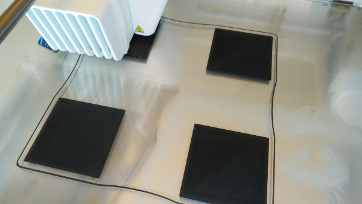
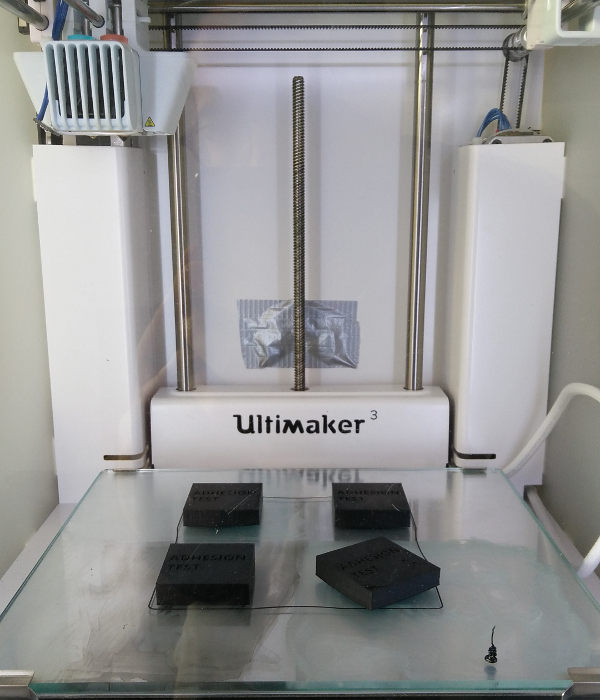
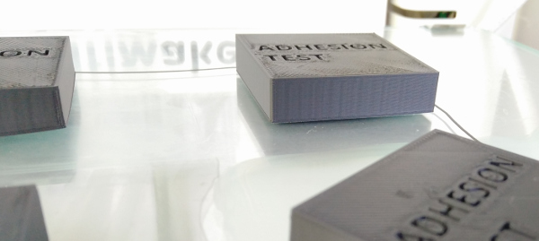
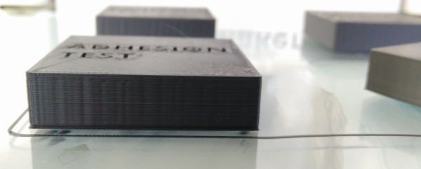
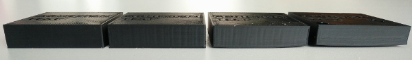

Introduction
An idea popped up to get a better, more objective comparison of different build plate adhesion solutions for ABS.The idea is simple: divide the build plate into four equal segments, and apply build plate adhesion solutions (glue, hairspray, juice and the like), and print four 3D objects on these segments. It's probably important to have the four segments on equal distance from the centre of the build plate, to rule out any non-uniform temperature.
The results of the four prints can be quantitatively compared by measuring warping, but also qualitatively by visual comparison. This test was first introduced on the Ultimaker Forum, and results publiches on this page. Feel free to add comments (or your own tests!, to the ultimaker forum.
The contestants
Based on my own preferences, but also on suggestions of others, I've selevted following bed adhesion types:- Ultimakers supplied glue stick: UHU Stic, in the upper left corner
- ABS Juice, made from black ABS scrap parts and Acetone, in the lower left corner
- 3D Lac, in the upper right corner
- Wood glue (Bison brand) diluted with water, in the lower right corner
For those interested, the printer settings are summarized here as well:
- Printer: An Ultimaker 3 with custom build front door
- ABS: Innofil3D ABS
- Extruder Temperature: 240C
- Heated Bed Temperature: 85C
- Layer height: 0.15mm
- Print speed: 20mm/sec (40mm/sec for infill))
- Fan off
- Objects: 4 blocks of 40x40x10mm, placed at locations X: +-40mm, Y +-40mm
The First Layer
The first layer was observed and for all 4 samples the first layer was extruded well on the heated bed. And the winner is...
Since it is said pictures say more than a thousand words:
The wood glue sample loosened on the last layer, and together with the UHU Stic, shows severe warping

3D Lac Sample stuck very well to the build plate, even after cooling down, and no signs of warping

The ABS Juice sample hold on well, it detached during cooldown of the build plate with barely noticeable warping

From left to right: 3D Lac, ABS Juice, UHU Stic, Wood Glue
Pure luck, the test almost finshed the last layer, and the wood-glue sample detached from the build platform... Also, two classic cases of warping can be seen on the wood glue sample, but also the UHU Stic.
It was further noticed, that after printing was finished, the ABS Juice sample started to loosen (also noticed by the little sound it is accompanied with). The 3D LAC remained detached remarkably well up untill the build plate reached room temperature again. So in essence: here is the final comparison:
- The winner: 3D Lac. No warping at all, and the print remained stuck on the build plate even after cooling down. Advantage as well that it is very easy to apply.
- Second place: ABS Juice. Minute warping (barely noticable), and detachment while cooling down the build plate. Disadvantage compared to 3D Lac is that it can be quite messy to apply, and the juice has to be prepared as well.
- The loosers: Wood glue and UHU Stic. Wood glue detached on the final layer, and UHU Stic was on its way to detach itself during printing. Warping is equally severe with both mehods.
Measured temperatured on the print head, about 10mm from the build plate, and the x-motor
Conclusion
With a slight advantage based on how well the models stuck to the build plate, but also with the absence of warping and the ease of application compared to ABS juice, the winner in this case is 3D Lac. Wood glue, and remarkably as Ultimakers supplies the UHU Stick with their printer (even being promoted to be used for ABS in documentation) seems unsuitable for application with ABS. It has to be noted that there is a measured temperature difference between the front and back of the printer as well, so more tests are adviced performed in a slightly different setup (see hints and tips below).Hints and Tips performing your own test
Some tips gained from this insight:- Use smaller objects (I would now recommend 5mm height squares instead of 10mm). Warping already occured halfway, and the risk of detachment from the build plate was too high
- Use two adhesion methods instead of four at a time, also to minimize the risk of detachment, and rule out temperature variations between the front and back of the build plate
- Use at least print settings and an adhesion type you are familiar with to ensure at least one of the adhesion methods works
- Ensure to have an equal distance of all models to the center of the buld plate, to rule out non-uniform temperature
- Share your results or feel free to comment here: Ultimaker Forum.